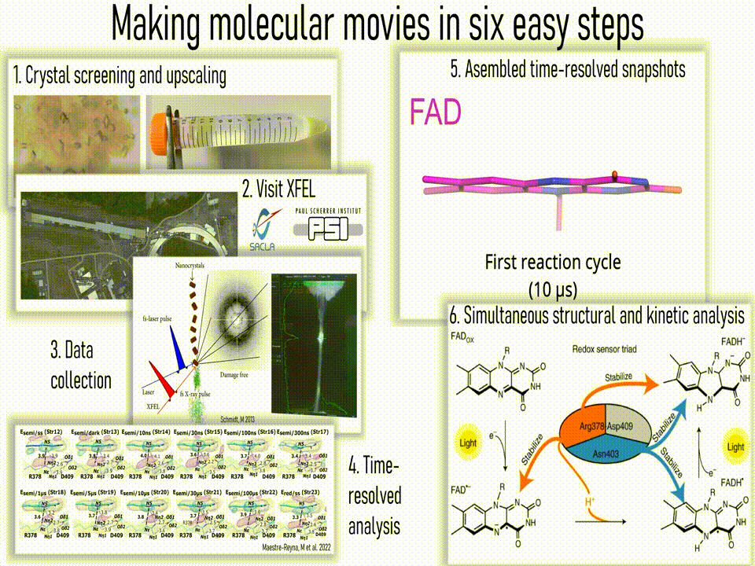

Research Focus
Time-Resolved Structural Biology
Our primary research focuses on understanding how biological macromolecules function by capturing their movements in real-time. Using Time-Resolved Crystallography and advanced spectroscopic methods, we can visualize enzymes in action at atomic resolution.
Key Areas of Investigation:
- DNA Repair Mechanisms: Investigating the dynamic mapping of DNA repair processes by photoenzymes like photolyases.
- Photoreceptor Activation: Uncovering structural dynamics in light-sensitive proteins.
- Methodology Development: Advancing Serial Femtosecond Crystallography (SFX) techniques.
